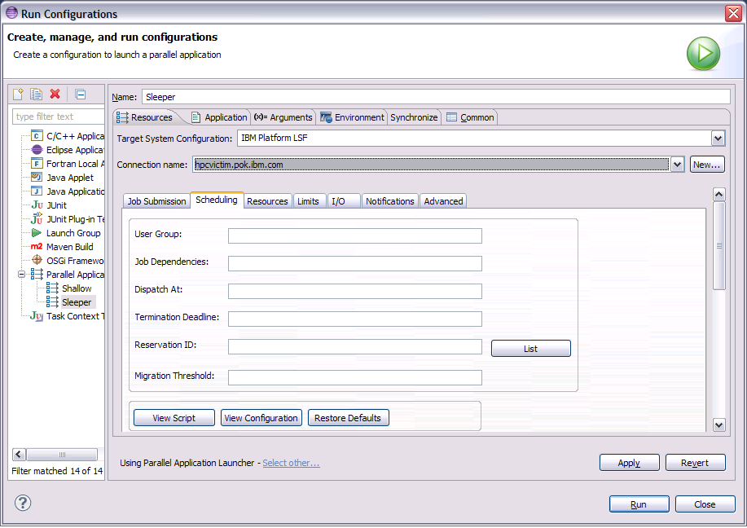
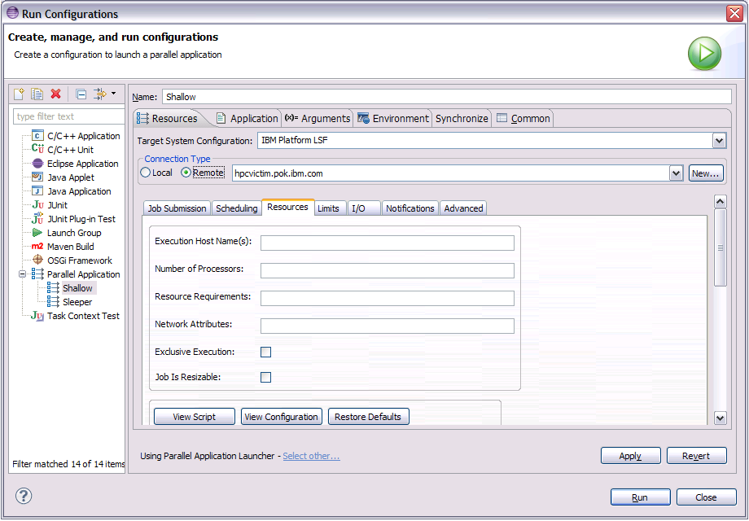
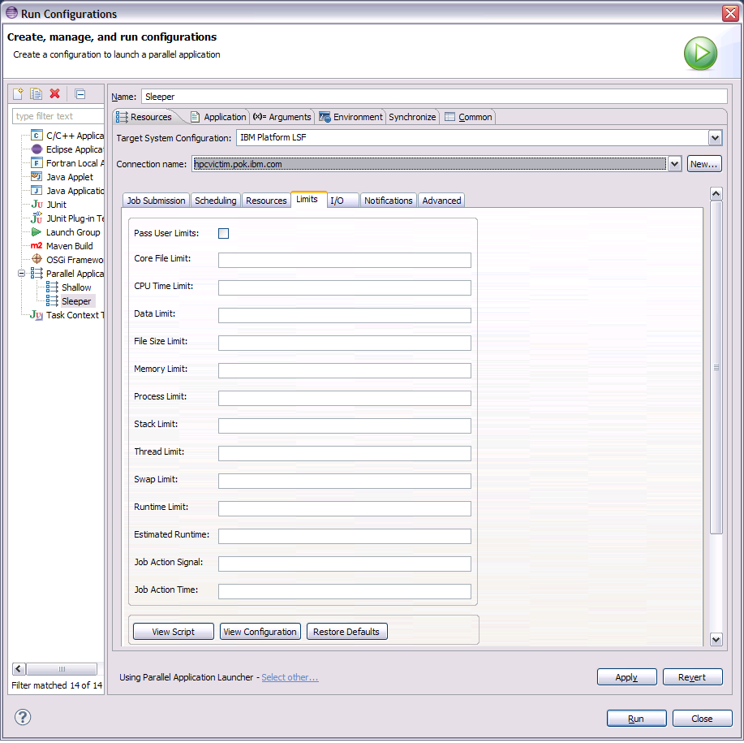
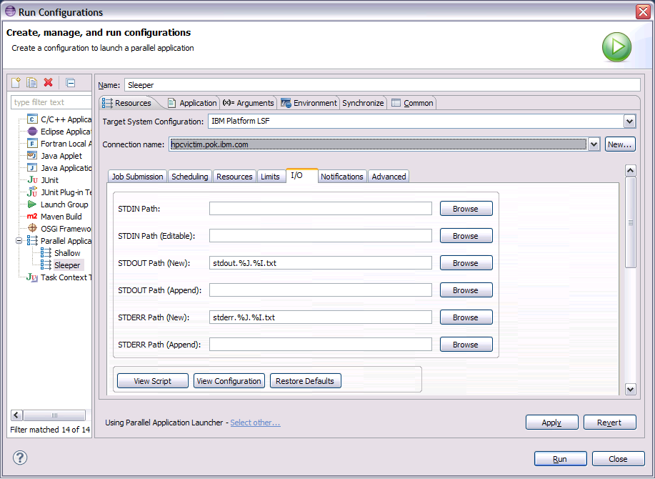
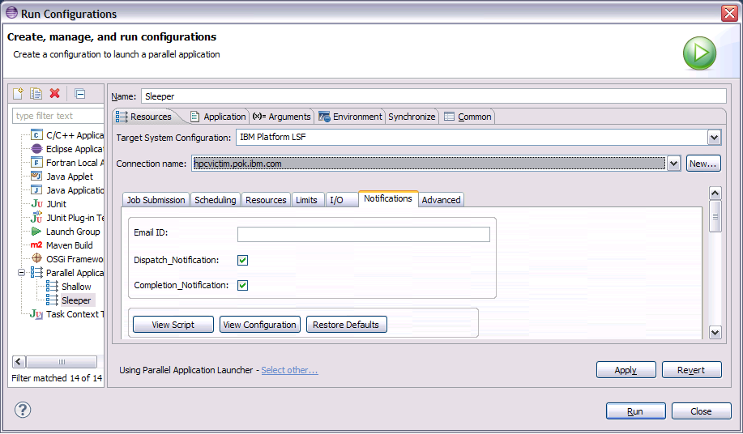
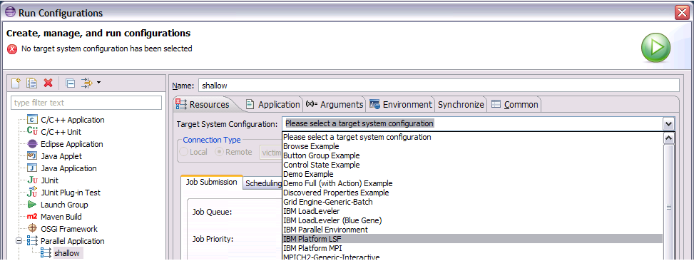
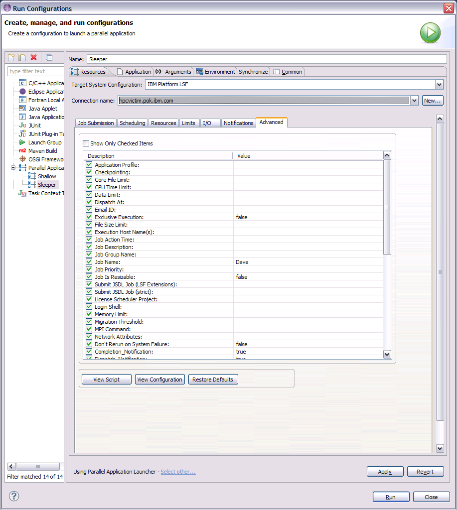

This section describes how to set up and use a run configuration using IBM Platform Load Sharing Facility (LSF), as the target system configuration within the Parallel Tools Platform (PTP), to support batch LSF job submission.
The user account that you use to submit jobs to the remote LSF system must include an invocation of profile.lsf, cshrc.lsf or perl.lsf as part of its login shell script, depending on that account's shell command processor. By invoking the appropriate script, you ensure that the account is set up for PTP to run LSF commands.
In addition, when you define the connection to the remote host, make sure the Use login shell checkbox in the Generic Remote Host dialog is checked. Note that this dialog appears in simplified mode. In order to check the Use login shell checkbox, you must click the Advanced button then check the checkbox.

To submit a batch job, use the Run menu or the run icon to select an existing run configuration or to create a new run configuration. The run configuration should be a Parallel Application run configuration.
Next, select the IBM Platform LSF option from the Target System Configuration drop down widget.
Then select the connection for the remote system from the Connection name drop down widget or click the New button to create a new connection to the remote system. (See Initial Setup about defining the connection.)
After you have selected the LSF target system configuration and the connection, the resources tab of the run configuration dialog is populated with a set of tabbed panes whose values you fill in with LSF job submission parameters.
The LSF job submission options are organized into several tabbed panes
In addition, the Advanced tab displays a list of all LSF job submission options where you can also fill in the values you need.
Options on the Job Submission tab (Job Queue and Application Profile) and on the Scheduling tab (Reservation ID) are comprised of a text entry field and a List button. You can either fill in the value in the text entry field or click the List button to get a dialog where you can select from one of the available choices. The selection dialog displayed when you click the List button for one of these options appears similar to the following:

You select a value from the dialog by clicking the entry in the left column and clicking the OK button.
Once you have filled in the values in the tabs as needed then click the Run button to submit the LSF job.
Back to Top